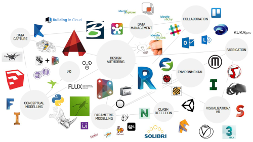

Programas de construção
-
- SAP2000
- O SAP2000 é um software para
Análise Estrutural e Dinâmica, Linear e Não-Linear por Elementos Finitos com interface gráfica 3D orientado a objetos, preparado para realizar, de forma totalmente integrada, a modelagem, análise e dimensionamento do mais vasto conjunto de situações de engenharia de estruturas. -
- CypCad
Programas de dsign e arquitectura
Enquanto a arquitetura do software é responsável pelo esqueleto e pela infraestrutura de alto nível de um software, o

- AUTOCAD
- REVIT
- LUMION
- SKETCHUP